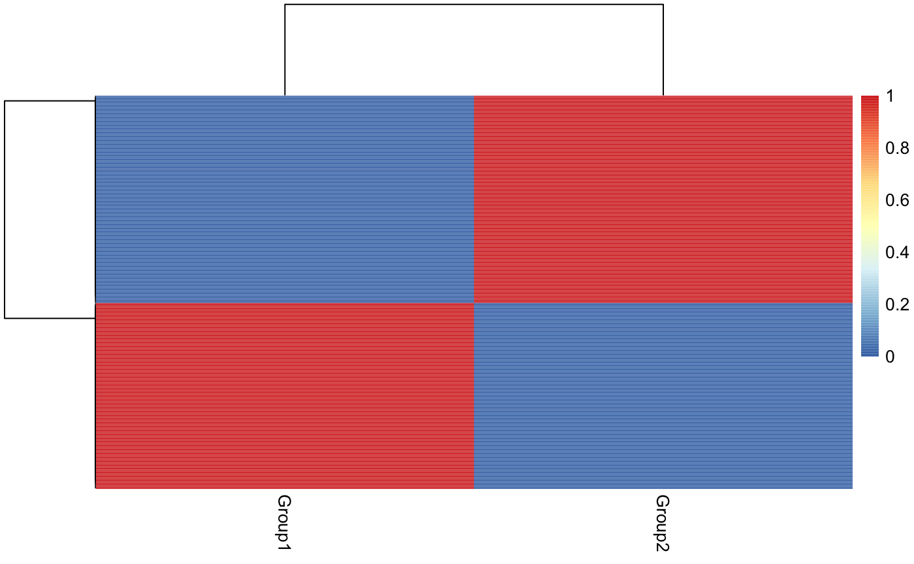

Assigning single-cells to known cell types with CellAssign
Allen W Zhang and Kieran R Campbell
October 2019
introduction-to-cellassign.RmdOverview
cellassign assigns cells measured using single cell RNA sequencing to known cell types based on marker gene information. Unlike other
methods for assigning cell types from single cell RNA-seq data, cellassign does not require labeled single cell or purified bulk expression data – cellassign only needs to know whether or not each given gene is a marker of each cell type:

Inference is performed using Tensorflow. For more details please see the manuscript.
Installation
cellassign depends on tensorflow, which can be installed as follows:
install.packages("tensorflow")
library(tensorflow)
install_tensorflow(extra_packages = "tensorflow-probability")Please ensure this installs version 2 of tensorflow. You can check this by calling
tensorflow::tf_config()
#> TensorFlow v2.1.0 (/usr/local/lib/python3.7/site-packages/tensorflow)
#> Python v3.7 (~/.virtualenvs/r-reticulate/bin/python)You can confirm that the installation succeeded by running:
Note that the tf object is created automatically when the tensorflow library is loaded to provide access to the Tensorflow interface.
For more details see the Rstudio page on tensorflow installation.
cellassign can then be installed through Bioconductor via
or the development version through github using the devtools package :
Basic usage
We begin by illustrating basic usage of cellassign on some example data bundled with the package. First, load the relevant libraries:
We use an example SingleCellExperiment consisting of 200 genes and 500 cells:
data(example_sce)
print(example_sce)
#> class: SingleCellExperiment
#> dim: 200 500
#> metadata(20): params params ... params params
#> assays(6): BatchCellMeans BaseCellMeans ... TrueCounts counts
#> rownames(200): Gene1 Gene2 ... Gene199 Gene200
#> rowData names(6): Gene BaseGeneMean ... DEFacGroup1 DEFacGroup2
#> colnames(500): Cell1 Cell2 ... Cell499 Cell500
#> colData names(5): Cell Batch Group ExpLibSize EM_group
#> reducedDimNames(0):
#> spikeNames(0):The true cell types are annotated for convenience in the Group slot of the SingleCellExperiment:
Also provided is an example gene-by-cell-type binary matrix, whose entries are 1 if a gene is a marker for a given cell type and 0 otherwise:
data(example_marker_mat)
print(example_marker_mat)
#> Group1 Group2
#> Gene1 1 0
#> Gene2 0 1
#> Gene3 1 0
#> Gene4 1 0
#> Gene5 1 0
#> Gene6 0 1
#> Gene7 0 1
#> Gene8 0 1
#> Gene9 0 1
#> Gene10 1 0We further require size factors for each cell. These are stored in sizeFactors(example_sce) - for your data we recommend computing them using the computeSumFactors function from the scran package. Note: it is highly recommended to compute size factors using the full set of genes, before subsetting to markers for input to cellassign.
We then call cellassign using the cellassign() function, passing in the above information. It is critical that gene expression data containing only marker genes is used as input to cellassign. We do this here by subsetting the input SingleCellExperiment using the row names (gene names) of the marker matrix. This also ensures that the order of the genes in the gene expression data matches the order of the genes in the marker matrix.
fit <- cellassign(exprs_obj = example_sce[rownames(example_marker_mat),],
marker_gene_info = example_marker_mat,
s = s,
learning_rate = 1e-2,
shrinkage = TRUE,
verbose = FALSE)This returns a cellassign object:
print(fit)
#> A cellassign fit for 500 cells, 10 genes, 2 cell types with 0 covariates
#> To access cell types, call celltypes(x)
#> To access cell type probabilities, call cellprobs(x)We can access the maximum likelihood estimates (MLE) of cell type using the celltypes function:
and all MLE parameters using mleparams:
print(str(mleparams(fit)))
#> List of 9
#> $ delta : num [1:10, 1:2] 2.32 0 2.5 2.74 2.82 ...
#> ..- attr(*, "dimnames")=List of 2
#> .. ..$ : chr [1:10] "Gene1" "Gene2" "Gene3" "Gene4" ...
#> .. ..$ : chr [1:2] "Group1" "Group2"
#> $ beta : num [1:10, 1] 0.487 -0.261 -1.013 1.328 1.537 ...
#> ..- attr(*, "dimnames")=List of 2
#> .. ..$ : chr [1:10] "Gene1" "Gene2" "Gene3" "Gene4" ...
#> .. ..$ : NULL
#> $ phi : num [1:500, 1:10, 1:2] 1.81 1.81 1.8 1.8 1.8 ...
#> $ gamma : num [1:500, 1:2] 1.00 4.50e-147 8.21e-45 1.00 1.00 ...
#> ..- attr(*, "dimnames")=List of 2
#> .. ..$ : NULL
#> .. ..$ : chr [1:2] "Group1" "Group2"
#> $ mu : num [1:500, 1:10, 1:2] 22.6 80.8 11.5 15.5 15.8 ...
#> $ a : num [1:10(1d)] 0.989 1.053 1.125 1.209 1.307 ...
#> $ theta : num [1:2(1d)] 0.472 0.528
#> ..- attr(*, "dimnames")=List of 1
#> .. ..$ : chr [1:2] "Group1" "Group2"
#> $ ld_mean: num 1
#> $ ld_var : num 0.785
#> NULLWe can also visualize the probabilities of assignment using the cellprobs function that returns a probability matrix for each cell and cell type:

Finally, since this is simulated data we can check the concordance with the true group values:
Example set of markers for tumour microenvironment
A set of example markers are included with the cellassign package for common cell types in the human tumour microenvironment. Users should be aware that
- This set is provided as an example only and we recommend researchers derive marker gene sets for their own use
- The
cellassignworkflow is typically iterative, including ensuring all markers are expressed in your expression data, and removing cell types from the input marker matrix that do not appear to be present
The marker genes are available for the following cell types:
- B cells
- T cells
- Cytotoxic T cells
- Monocyte/Macrophage
- Epithelial cells
- Myofibroblasts
- Vascular smooth muscle cells
- Endothelial cells
These can be accessed by calling
Note that this is a list of two marker lists:
Where symbol contains gene symbols:
lapply(head(example_TME_markers$symbol, n = 4), head, n = 4)
#> $`B cells`
#> [1] "VIM" "MS4A1" "CD79A" "PTPRC"
#>
#> $`T cells`
#> [1] "VIM" "CD2" "CD3D" "CD3E"
#>
#> $`Cytotoxic T cells`
#> [1] "VIM" "CD2" "CD3D" "CD3E"
#>
#> $`Monocyte/Macrophage`
#> [1] "VIM" "CD14" "FCGR3A" "CD33"and ensembl contains the equivalent ensembl gene ids:
lapply(head(example_TME_markers$ensembl, n = 4), head, n = 4)
#> $`B cells`
#> VIM MS4A1 CD79A PTPRC
#> "ENSG00000026025" "ENSG00000156738" "ENSG00000105369" "ENSG00000081237"
#>
#> $`T cells`
#> VIM CD2 CD3D CD3E
#> "ENSG00000026025" "ENSG00000116824" "ENSG00000167286" "ENSG00000198851"
#>
#> $`Cytotoxic T cells`
#> VIM CD2 CD3D CD3E
#> "ENSG00000026025" "ENSG00000116824" "ENSG00000167286" "ENSG00000198851"
#>
#> $`Monocyte/Macrophage`
#> VIM CD14 FCGR3A CD33
#> "ENSG00000026025" "ENSG00000170458" "ENSG00000203747" "ENSG00000105383"To use these with cellassign we can turn them into the binary marker by cell type matrix:
marker_mat <- marker_list_to_mat(example_TME_markers$ensembl)
marker_mat[1:3, 1:3]
#> B cells T cells Cytotoxic T cells
#> ENSG00000010610 0 1 0
#> ENSG00000026025 1 1 1
#> ENSG00000039068 0 0 0Important: the single cell experiment or input gene expression matrix should be subset accordingly to match the rows of the marker input matrix, e.g. if sce is a SingleCellExperiment with ensembl IDs as rownames then call
Note that the rows in the single cell experiment or gene expression matrix should be ordered identically to those in the marker input matrix.
You can the proceed using cellassign as before.
Advanced usage
Options for a cellassign() call
There are several options to a call to cellassign that can alter the results:
-
min_delta: the minimum log-fold change in expression above which a
genemust be over-expressed in the cells of which it is a marker compared to all others -
X: a covariate matrix, see section below -
shrinkage: whether to impose a hierarchical prior on the values ofdelta(cell type specific increase in expression of marker genes)
Constructing a marker gene matrix
Here we demonstrate a method of constructing the binary marker gene matrix that encodes our a priori knowledge of cell types.
For two types of cells (Group1 and Group2) we know a priori several good marker genes, e.g.:
| Cell type | Genes |
|---|---|
| Group1 | Gene186, Gene269, Gene526, Gene536, Gene994 |
| Group2 | Gene205, Gene575, Gene754, Gene773, Gene949 |
To use this in cellassign, we must turn this into a named list, where the names are the cell types and the entries are marker genes (not necessarily mutually exclusive) for each cell type:
marker_gene_list <- list(
Group1 = c("Gene186", "Gene269", "Gene526", "Gene536", "Gene994"),
Group2 = c("Gene205", "Gene575", "Gene754", "Gene773", "Gene949")
)
print(str(marker_gene_list))
#> List of 2
#> $ Group1: chr [1:5] "Gene186" "Gene269" "Gene526" "Gene536" ...
#> $ Group2: chr [1:5] "Gene205" "Gene575" "Gene754" "Gene773" ...
#> NULLWe can then directly provide this to cellassign or turn it into a binary marker gene matrix first using the marker_list_to_mat function:
print(marker_list_to_mat(marker_gene_list))
#> Group1 Group2 other
#> Gene186 1 0 0
#> Gene205 0 1 0
#> Gene269 1 0 0
#> Gene526 1 0 0
#> Gene536 1 0 0
#> Gene575 0 1 0
#> Gene754 0 1 0
#> Gene773 0 1 0
#> Gene949 0 1 0
#> Gene994 1 0 0This has automatically included an other group for cells that do not fall into either type - this can be excluded by setting include_other = FALSE.
Adding covariates
Covariates corresponding to batch, sample, or patient-specific effects can be included in the cellassign model. For example, if we have two covariates x1 and x2:
We can construct a design matrix using the model.matrix function in R:
Note we explicitly set no intercept by passing in 0 in the beginning. We can then perform an equivalent cell assignment passing this in also:
Technical
sessionInfo()
#> R version 3.6.0 (2019-04-26)
#> Platform: x86_64-apple-darwin15.6.0 (64-bit)
#> Running under: macOS 10.15.2
#>
#> Matrix products: default
#> BLAS: /Library/Frameworks/R.framework/Versions/3.6/Resources/lib/libRblas.0.dylib
#> LAPACK: /Library/Frameworks/R.framework/Versions/3.6/Resources/lib/libRlapack.dylib
#>
#> locale:
#> [1] en_CA.UTF-8/en_CA.UTF-8/en_CA.UTF-8/C/en_CA.UTF-8/en_CA.UTF-8
#>
#> attached base packages:
#> [1] parallel stats4 stats graphics grDevices utils datasets
#> [8] methods base
#>
#> other attached packages:
#> [1] cellassign_0.99.16 SingleCellExperiment_1.6.0
#> [3] SummarizedExperiment_1.14.1 DelayedArray_0.10.0
#> [5] BiocParallel_1.18.1 matrixStats_0.55.0
#> [7] Biobase_2.44.0 GenomicRanges_1.36.1
#> [9] GenomeInfoDb_1.20.0 IRanges_2.18.3
#> [11] S4Vectors_0.22.1 BiocGenerics_0.30.0
#> [13] BiocStyle_2.12.0
#>
#> loaded via a namespace (and not attached):
#> [1] reticulate_1.13 xfun_0.12 lattice_0.20-38
#> [4] colorspace_1.4-1 htmltools_0.4.0 yaml_2.2.0
#> [7] base64enc_0.1-3 rlang_0.4.2 pkgdown_1.4.1
#> [10] RColorBrewer_1.1-2 lifecycle_0.1.0 GenomeInfoDbData_1.2.1
#> [13] tensorflow_2.0.0 stringr_1.4.0 zlibbioc_1.30.0
#> [16] munsell_0.5.0 gtable_0.3.0 memoise_1.1.0
#> [19] evaluate_0.14 knitr_1.27 tfruns_1.4
#> [22] Rcpp_1.0.3 scales_1.1.0 backports_1.1.5
#> [25] BiocManager_1.30.10 desc_1.2.0 jsonlite_1.6
#> [28] XVector_0.24.0 fs_1.3.1 png_0.1-7
#> [31] digest_0.6.23 stringi_1.4.5 bookdown_0.17
#> [34] grid_3.6.0 rprojroot_1.3-2 tools_3.6.0
#> [37] bitops_1.0-6 magrittr_1.5 RCurl_1.95-4.13
#> [40] crayon_1.3.4 whisker_0.4 MASS_7.3-51.5
#> [43] pheatmap_1.0.12 Matrix_1.2-18 assertthat_0.2.1
#> [46] rmarkdown_2.0 rstudioapi_0.10 R6_2.4.1
#> [49] compiler_3.6.0